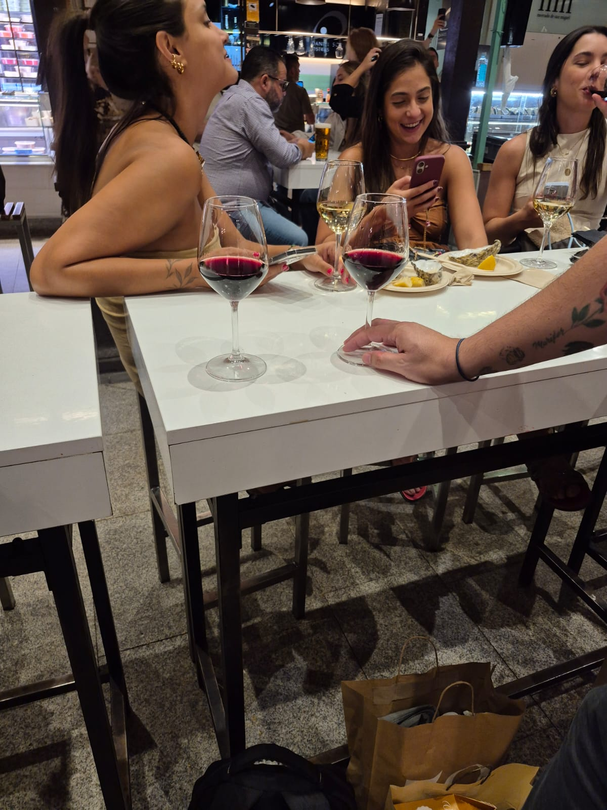
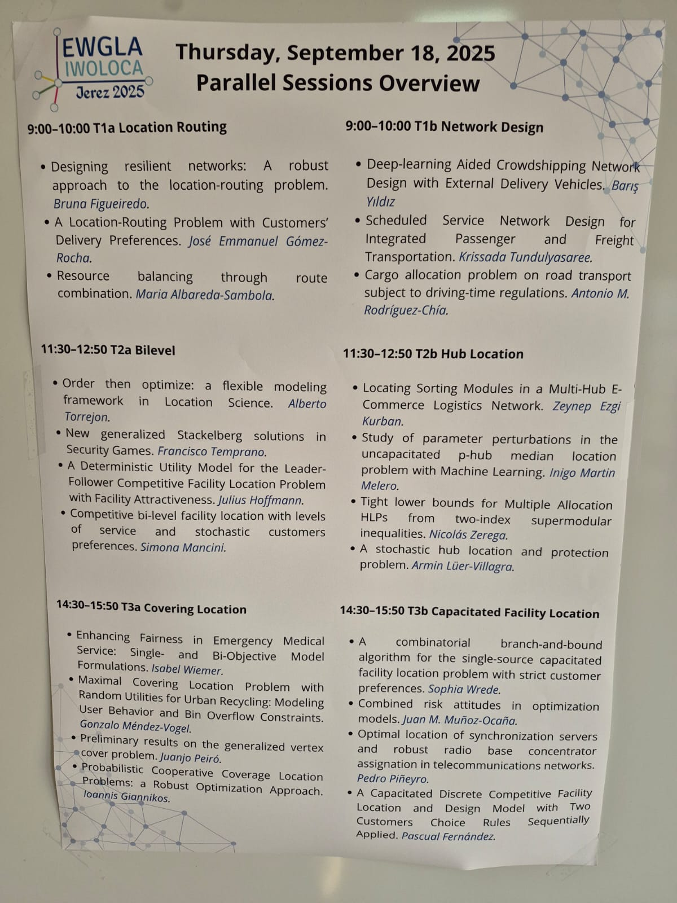
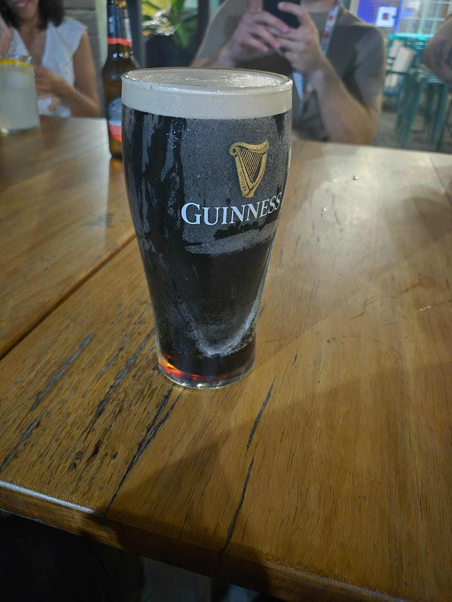
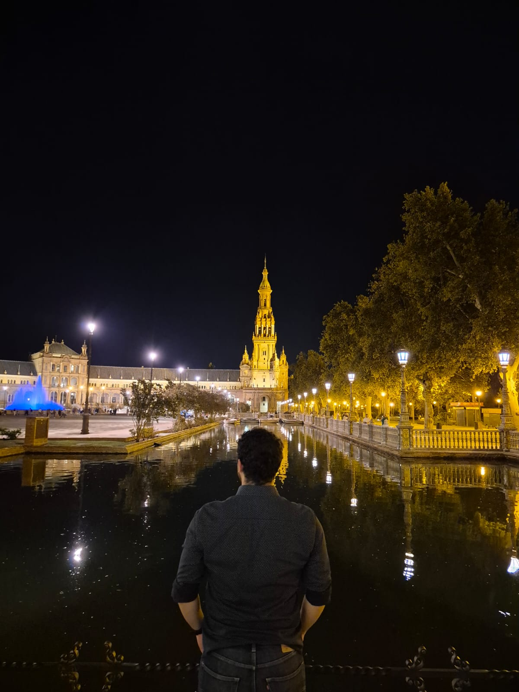
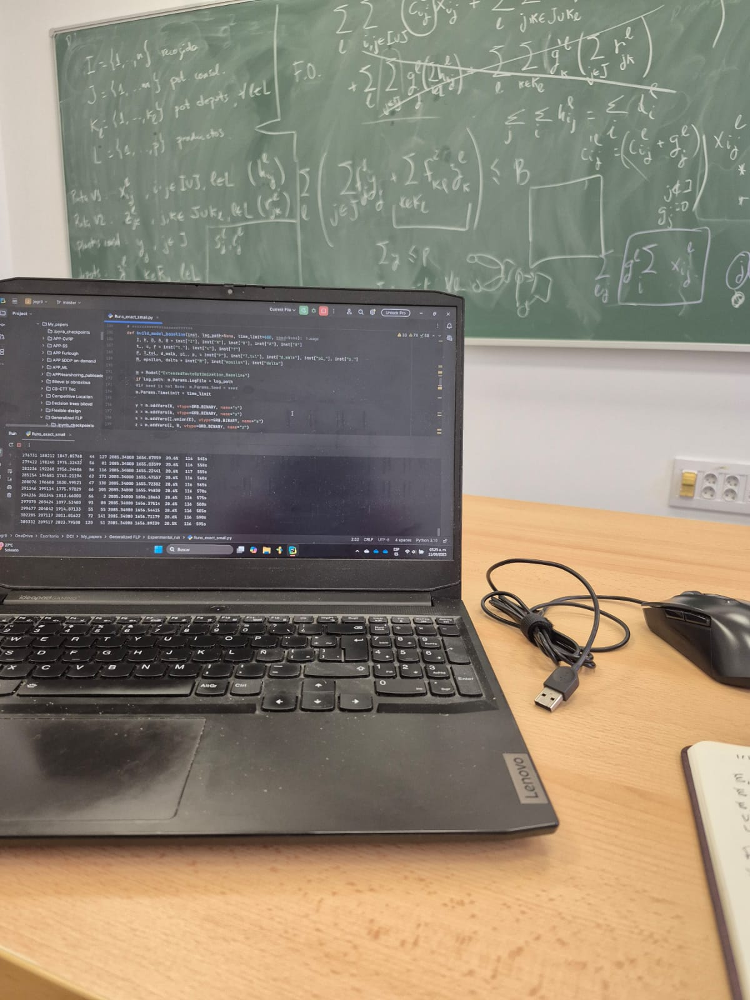
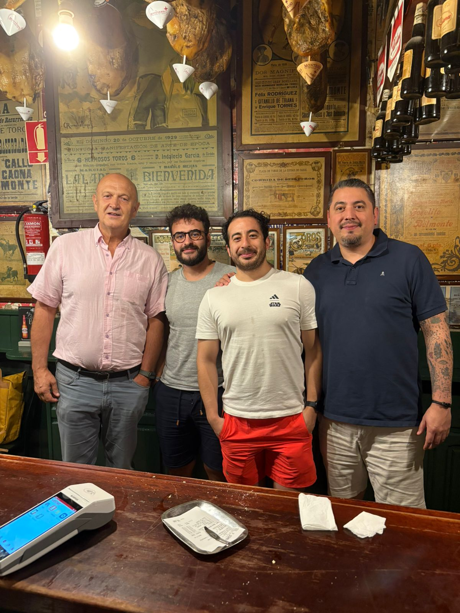

Mi viaje y estancia en Andalucía
Sesión de presentación en EWGLA–IWOLOCA, Jerez 2025
En septiembre de 2025 viví una de las etapas más enriquecedoras de mi vida en Andalucía, una región que combina historia, ciencia y calidez humana. Durante mi estancia trabajé en la Universidad de Sevilla y en Cádiz junto a los investigadores Justo Puerto y Elena Fernández, explorando temas de programación matemática y optimización bilevel aplicados a problemas de machine learning y de última milla. La gente aquí es brillante, generosa y auténtica. Te enseñan sin arrogancia, discuten con pasión y te ayudan a crecer. Estar aquí me dio humildad; entendí que México está muy por detrás en ciertas áreas, pero también confirmé que con esfuerzo, colaboración y curiosidad, podemos alcanzar ese nivel.
Una Guinness después de las sesiones... el equilibrio necesario entre teoría y práctica.
Viví muchas experiencias divertidas (algunas más que otras), pero sin duda, el trabajo duro fue lo mejor. En una videollamada con mi familia me preguntaron qué había conocido ya; mi respuesta más sincera fue: “El IMUS (Instituto de Matemáticas de la Universidad de Sevilla), el despacho de Justo, el nuevo despacho de Justo, mi despacho… y algunos bares.” Aquí se trabaja en serio. Hubo días en los que terminé saturado de optimización (algo que nunca me había pasado), pero eso me ayudó a redescubrir el valor del tiempo y el equilibrio. Aprendí a detenerme para ver los atardeceres, disfrutar una bebida y darle sentido a los pequeños momentos.
Plaza de España, Sevilla... un lugar que nunca se ve igual dos veces.
Fue una sensación extraña trabajar con personas cuyos papers he leído durante años. Retador, sí, porque sentía la presión invisible de representar bien a mi país, pero también profundamente inspirador. Más allá del conocimiento técnico, las vivencias fueron lo mejor: la cultura, la comida, las risas. Trabajábamos duro, pero también había tiempo para disfrutar, y vaya que lo hicimos. Seguirle el paso a mi asesor fue un reto aparte: incontables cervezas, vinos y conversaciones nocturnas que mezclaban optimización, fútbol y filosofía.
Días de código, pizarras infinitas y discusiones sobre modelos bilevel y heurísticas.
En resumen, llegué sabiendo un poco más de localización, ruteo, árboles de clasificación óptima y optimización bilevel; pero me fui sabiendo algo más importante: que la ciencia se hace mejor cuando se disfruta el proceso, cuando se aprende de otros y cuando uno se permite vivir, no solo investigar.
Cierre del viaje, tapas, vino y buena compañía.
Después de un día largo de optimizaión con Justo, Alberto y Fernando.
Nota: esta estancia me cambió. Me recordó por qué amo lo que hago y me reafirmó que el conocimiento, al igual que la vida, se disfruta más cuando se comparte.